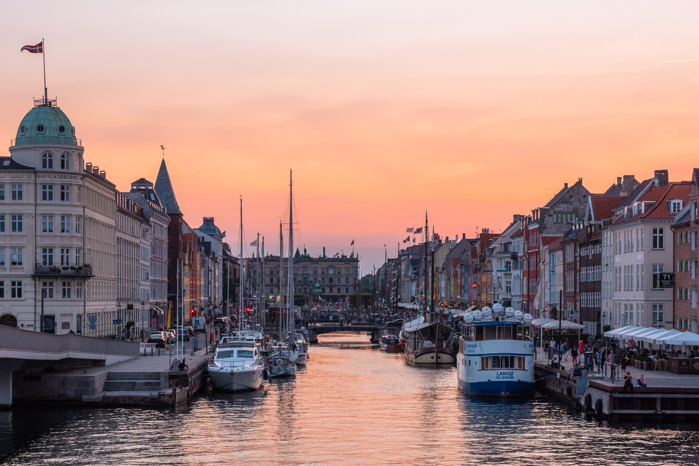
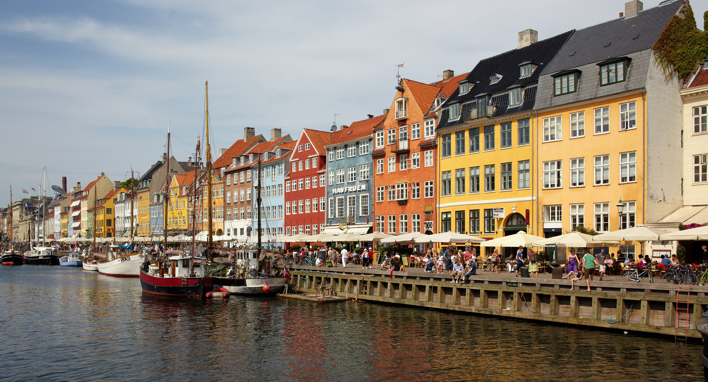
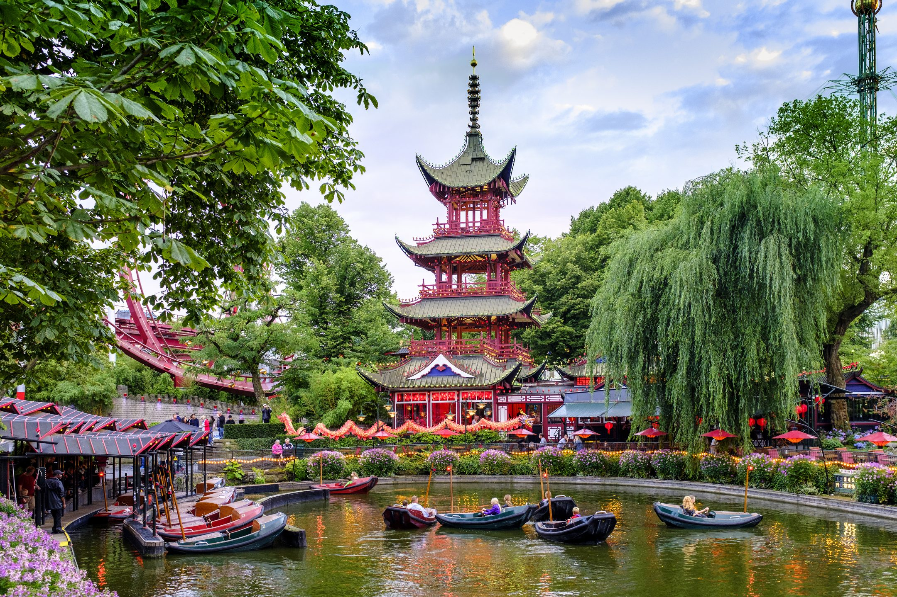

KOPENHAGA
Rzym ::: Londyn ::: Kopenhaga
Kopenhaga – stolica i największe miasto Danii położone na wschodnim wybrzeżu wyspy Zelandia i częściowo Amager. Od 1 lipca 2000 połączona jest mostem nad Sundem ze szwedzkim Malmö. W 2023 mieszkało w niej 653 664 osób, a cały zespół miejski tzw. „Wielkiej Kopenhagi” liczył 1 363 269 mieszkańców.

Główne Atrakcje
KANAŁ NYHAWN

Nyhavn – kanał i ulica w centrum Kopenhagi, położona między Kongens Nytorv a przystanią. Fasady domów pomalowane są charakterystycznymi jaskrawymi kolorami. Ulica jest ważną atrakcją turystyczną.
GLIPTOTEKA

Ny Carlsberg Glyptotek – muzeum sztuki w Kopenhadze poświęcone kulturze starożytnej basenu Morza Śródziemnego oraz XIX-wiecznej sztuce francuskiej i duńskiej. Założone w 1882 przez znanego duńskiego browarnika, kolekcjonera i mecenasa sztuki, Carla Jacobsena jako dar dla społeczeństwa.
OGRODY TIVOLI

Ogrody Tivoli – położony w centrum Kopenhagi park rozrywki i ogród otwarty 15 sierpnia 1843 roku[1]. Jest drugim najstarszym parkiem rozrywki świata po Dyrehavsbakken, znajdującym się w pobliskim Klampenborg.